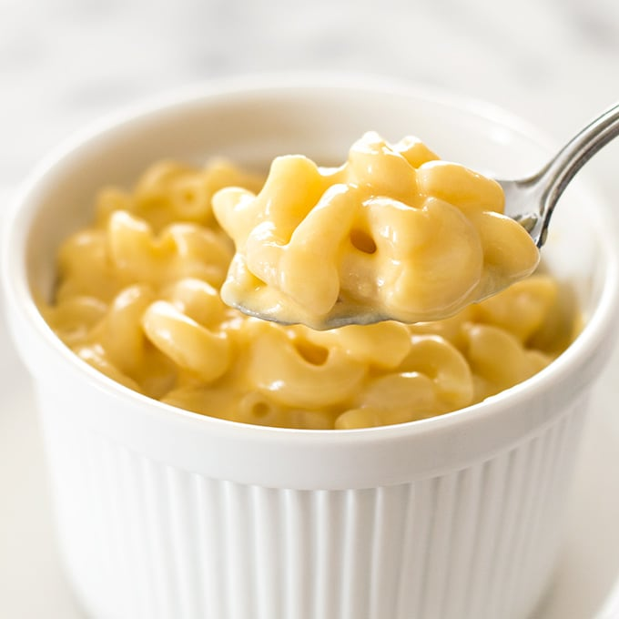

Mac and Cheese

Description
You can't go wrong with this simple, quick to make recipe
Ingredients
- Macaroni
- Butter
- Flour
- Milk
- Cheese
- Bread crumbs
- Seasoning: Salt, Pepper, Paprika
Steps:
- Boil the noodles: Boil in salted water until noodles are soft. Then transfer to a baking dish.
- Make the cheese sauce: Melt butter the whisk in flour and milk. Bring to a simmer and string in the cheese. Season with salt and pepper and keep simmering until the sauce is thick. Pour the sauce over noodles then stir.
- Make the topping: Melt a tablespoon of butter in a skillet then add the breadcrumbs and toast until the crumbs turn brown. Spread the topping over the mac and cheese then add a sprinkle of paprika.
- Bake the mac and cheese: Bake in a preheated oven until the topping is golden.
Enjoy!